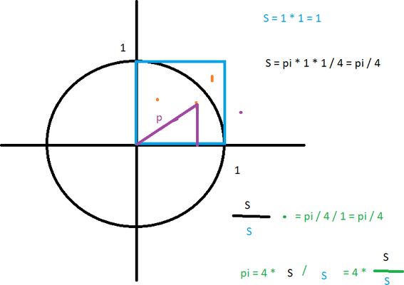
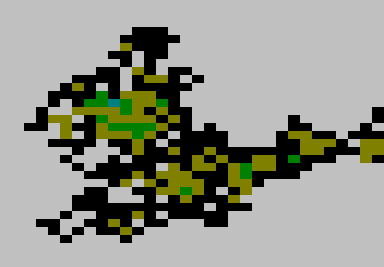
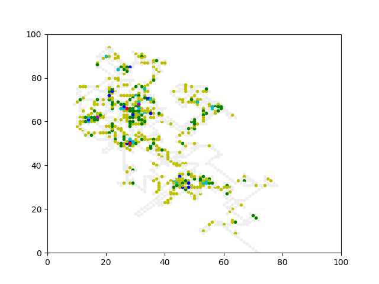

Cvičení
Procvičování – náhoda a pravděpodobnost
Pokuste se pomocí metody Monte Carlo aproximovat číslo π následujícím způsobem: Vepíšete-li čtverci o straně 1 čtvrtkruh (část kruhu se středem v jednom z rohů čtverce), bude obsah tohoto čtvrtkruhu π/4. Budete-li nyní náhodně generovat body o souřadnicích spadajících do čtverce, je pravděpodobnost π/4, že se trefíte do čtvrtkruhu.

Metoda je to nepřekvapivě velmi nepřesná a pomalá – pro jakékoliv rozumnější přiblížení k hledanému číslu π musíte provést velkou spoustu pokusů. (Kolik tak asi?)nápověda
random.random()
Když už jste v tom, zkuste metodou Monte Carlo spočítat nějaký klasický známý určitý integrál, kupříkladu pro funkci
sin(x) v intervalu <0, 2π>. Jelikož výsledkem by samozřejmě měla být prakticky nula, je to také cvičení na to, jak se vlastně k nule při výpočtech v reálných číslech chovat.
nápověda
Tohle je na Monte Carlo pravda trochu neobvyklý příklad – většinou asi nebudete míchat „kladné“ a „záporné“ plochy dohromady, protože vás to vlastně nutí rozdělit úlohu na dvě samostatné části.
Další pěknou aplikací náhody jsou tzv. náhodné procházky. Začneme naprostou klasikou – „opilcem“. Tato náhodná procházka je v nejjednodušším klasickém případě jednorozměrná:
Opilec zpáteční cestou z hospody, která je n kroků od jeho domova, dorazil již na pole vzdálené k kroků od domova. Zde se ovšem zaškobrtl a začal padat. Sice se po každém kroku a pádu zase zvedne, ale zcela ztratil pojem o směru, jen ho jeden z nich táhne více než druhý (s příslušnými pravděpodobnostmi p a 1-p). „Chudák“ takto padá a bloudí, až časem někde skončí. Bude to doma nebo zpátky v hospodě?
Vyberte si vhodná čísla n, k a p a nasimulujte opilcovu cestu. Kolik kroků (a pádů) musí průměrně absolvovat, aby někam došel? Zaznamenejte jednotlivé pokusy v podobě vhodného logu. (Případná grafická reprezentace je na vás.)
Opilec zpáteční cestou z hospody, která je n kroků od jeho domova, dorazil již na pole vzdálené k kroků od domova. Zde se ovšem zaškobrtl a začal padat. Sice se po každém kroku a pádu zase zvedne, ale zcela ztratil pojem o směru, jen ho jeden z nich táhne více než druhý (s příslušnými pravděpodobnostmi p a 1-p). „Chudák“ takto padá a bloudí, až časem někde skončí. Bude to doma nebo zpátky v hospodě?
Vyberte si vhodná čísla n, k a p a nasimulujte opilcovu cestu. Kolik kroků (a pádů) musí průměrně absolvovat, aby někam došel? Zaznamenejte jednotlivé pokusy v podobě vhodného logu. (Případná grafická reprezentace je na vás.)
nápověda
Ačkoli má přinejmenším pro pobavení celkem smysl udělat nějakou grafickou reprezentaci, zajímavější je studium závislostí mezi veličinami n, k a p, pro které bohatě stačí jen provést spoustu různých číselných pokusů.
Klasickým příkladem dvourozměrné náhodné procházky je pak Brownův pohyb: Pylové zrnko je tepelným pohybem molekul kapaliny v každém časovém okamžiku strkáno náhodnými směry o nějakou vzdálenost nějakou rychlostí. Pro první pokus si to ale zjednodušíme – rychlost nebudeme vůbec uvažovat a krok bude zásadně jedna.
Zaznamenejte graficky na konzoli pohyb pylového zrnka ze středu obrazovky k jejímu okraji (výpočet tedy končí dosažením libovolného ze čtyř okrajů). Dostupných sedm konzolových barev (v kombinaci s tloušťkou fontu vlastně čtrnáct) vhodně namapujte na počet navštívení toho kterého místa. Po ukončení simulace zapište reprezentaci počtu navštívení míst do souboru, a to v takové podobě, že když ji po načtení vytisknete na terminálu stejné velikosti, dostanete stejný barevný obrazec.
Pohyb zrnka do všech směrů pokládejte za stejně pravděpodobný. Za směry můžete brát buď pouze sever–východ–jih–západ nebo navíc i čtyři diagonální. (Jako bonus můžete pravděpodobnosti do různých směrů změnit – jak bude obrazec náhodné procházky vypadat pro daný výběr pravděpodobností?)
Zaznamenejte graficky na konzoli pohyb pylového zrnka ze středu obrazovky k jejímu okraji (výpočet tedy končí dosažením libovolného ze čtyř okrajů). Dostupných sedm konzolových barev (v kombinaci s tloušťkou fontu vlastně čtrnáct) vhodně namapujte na počet navštívení toho kterého místa. Po ukončení simulace zapište reprezentaci počtu navštívení míst do souboru, a to v takové podobě, že když ji po načtení vytisknete na terminálu stejné velikosti, dostanete stejný barevný obrazec.
Pohyb zrnka do všech směrů pokládejte za stejně pravděpodobný. Za směry můžete brát buď pouze sever–východ–jih–západ nebo navíc i čtyři diagonální. (Jako bonus můžete pravděpodobnosti do různých směrů změnit – jak bude obrazec náhodné procházky vypadat pro daný výběr pravděpodobností?)

nápověda
Grafický výstup (i záznam do souboru) se dá řešit mnoha způsoby. Ale dlužno podotknout, že vykreslovat při každém kroku celou plochu konzole je nejen zoufale pomalé, ale navíc i zcela zbytečné – řídicí sekvence ANSI obsahují i pozicování na konkrétní souřadnice. Nehledě na to, že tak získáte výpis historie zcela zdarma.
Rozšiřte předchozí úlohu: Proběhněte celou simulaci (za stejných podmínek) několikrát a počítejte, kolik kroků v každém kole trvala. Tyto počty plus jejich průměr, na konci všech simulací vypište.
Tentokrát se pokuste nasimulovat Brownův pohyb lépe (reálněji): Pylové zrnko se sice dále sráží (a tudíž mění směr) zcela náhodně, ale před další srážkou může urazit i podstatně delší dráhu než právě jednu jednotku.
Prakticky druhý požadavek můžete nepřekvapivě nasimulovat tak, že ke srážce s okolními molekulami dochází s jistou pravděpodobností menší než 1, takže zrnko může klidně několik kroků cestovat původním směrem, než dojde ke srážce a změně směru.
Prakticky druhý požadavek můžete nepřekvapivě nasimulovat tak, že ke srážce s okolními molekulami dochází s jistou pravděpodobností menší než 1, takže zrnko může klidně několik kroků cestovat původním směrem, než dojde ke srážce a změně směru.
nápověda
A kdybyste to chtěli udělat skutečně pořádně, je na čase přečíst si teorii.
Přepište předchozí úlohy tak, aby místo konzole používaly pro výstup matplotlib.
PS: V závislosti na řešení může být export historie do souboru výrazně náročnější, tak možná berte tuto úlohu spíše jako cvičení na matplotlib.

PS: V závislosti na řešení může být export historie do souboru výrazně náročnější, tak možná berte tuto úlohu spíše jako cvičení na matplotlib.
Inspirace pro skoro všechny úlohy: Radek Pelánek: „Programátorská cvičebnice“ (ComputerPress, Brno 2012)